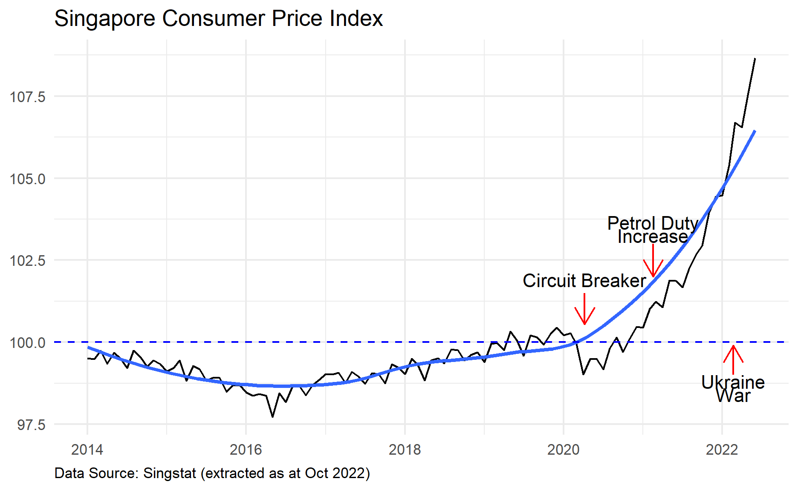
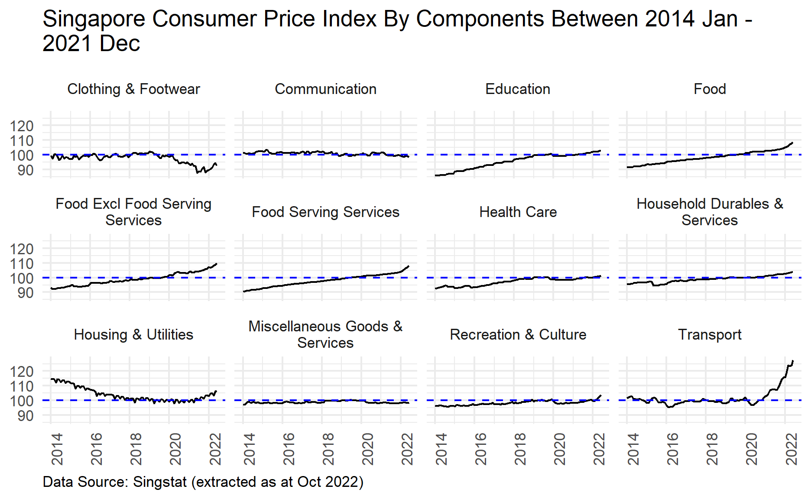
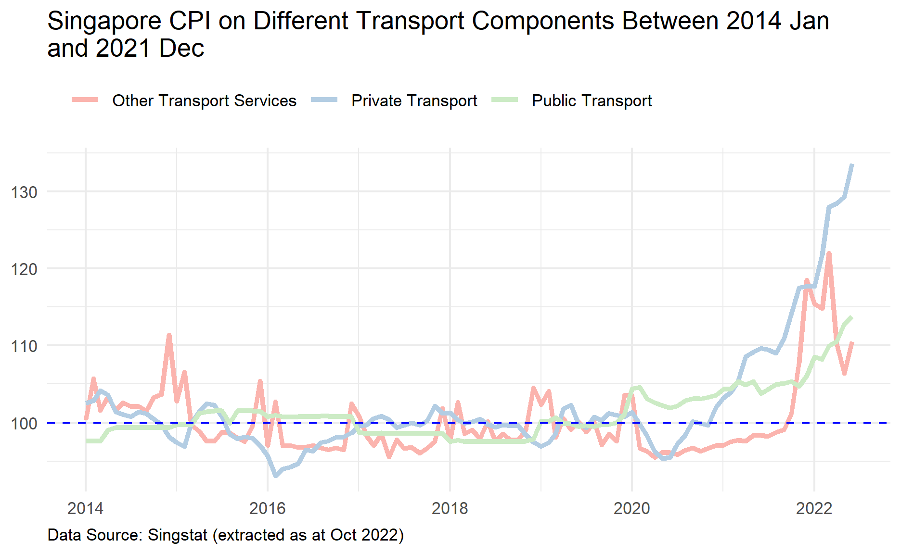
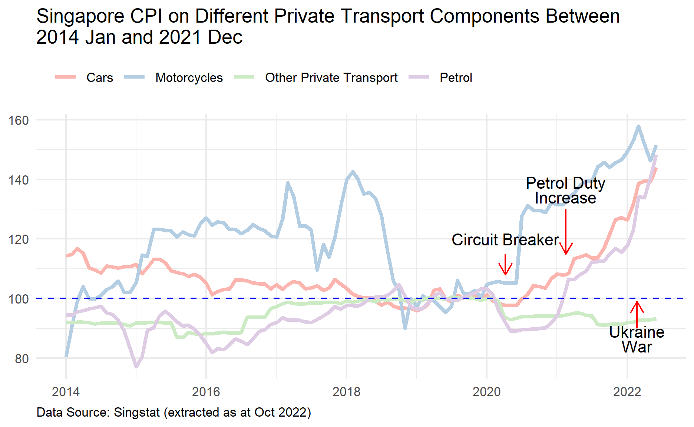
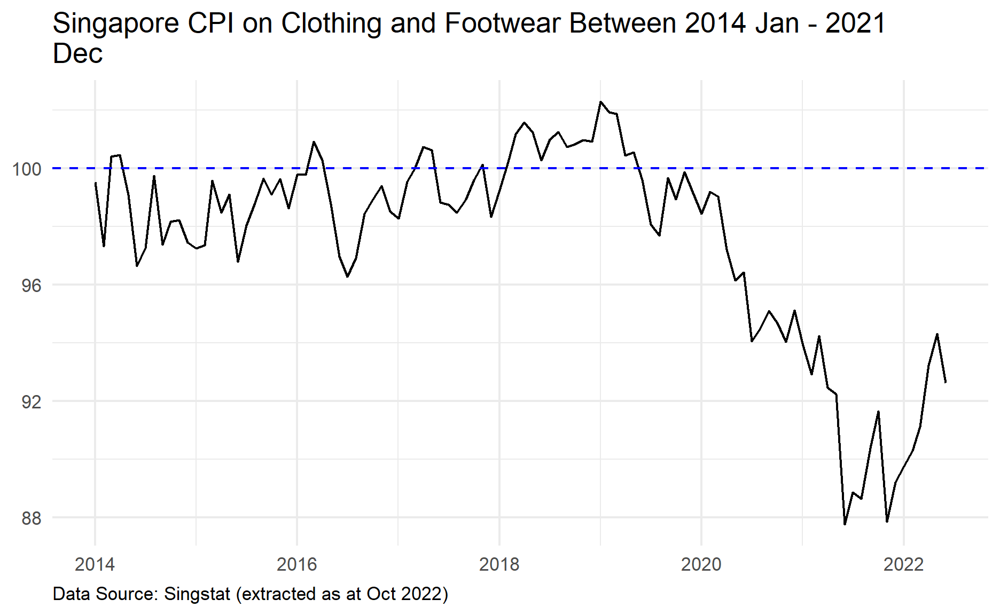
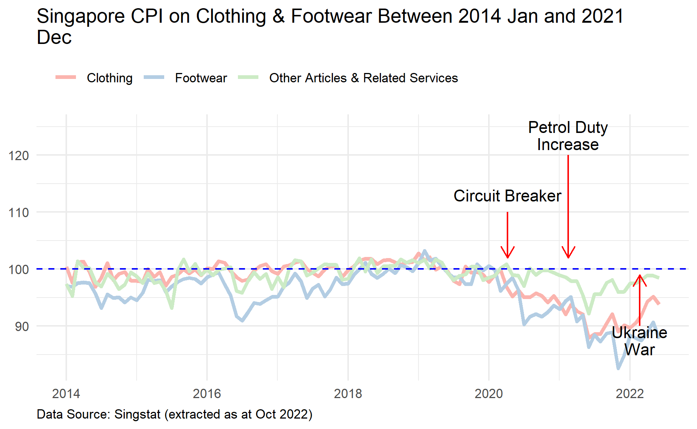

Photo by Palu Malerba
Recently there is a lot of discussions on rising inflation.
This makes me curious about how inflation has changed over time.
Extracted from CNA on 23 Oct 2022
Before we start visualizing the time series, let’s take a look what is time series.
What is time series?
Time series data is the data collected at regular time intervals.
An observed time series can be decomposed into three components: the trend (long term direction), the seasonal (systematic, calendar related movements) and the irregular (unsystematic, short term fluctuations) (Australian Bureau of Statistics).
Demonstration
In this demonstration, I will be using the consumer price index dataset I obtained from Singstat website.
This is also to satisfy my curiosity about what is driving inflation in Singapore upwards.
Setup the environment
First, I will set up the environment by calling the necessary packages.
pacman::p_load(tidyverse, lubridate, timetk, tsibble, janitor,
feasts, plotly, wesanderson)
Next, I will import the dataset into the environment.
df <- read_csv("data/M212881.csv", skip = 10) %>%
slice(1:148) %>%
filter(`Data Series` != "Hawker Centres" &
`Data Series` != "Food Courts & Coffee Shops")
As some of the columns are imported in incorrect column types, I will
use sapply function to convert the columns into the correct
column types.
Once the columns are imported into the correct types, I will reshape
the dataset by using pivot_longer function.
start_date <- "2014-01-01"
end_date <- "2022-06-01"
df_1 <- df %>%
pivot_longer(!`Data Series`, names_to = "Month Year", values_to = "CPI") %>%
clean_names() %>%
mutate(month_year_recoded = ym(month_year)) %>%
select(-month_year) %>%
filter(month_year_recoded >= start_date & month_year_recoded <= end_date)
as_tsibble function is to convert the dataset into
tsibble dataframe.
We will pass month_year_recoded into index argument.
Another thing to take note of is we need to pass info
df_1_ts <- df_1 %>%
mutate(month_year_recoded = yearmonth(month_year_recoded)) %>%
as_tsibble(index = month_year_recoded,
key = data_series)
The has_gaps function can help us to check whether there
are any gaps in the data.
has_gaps(df_1_ts) %>%
filter(.gaps == TRUE)
# A tibble: 0 x 2
# ... with 2 variables: data_series <chr>, .gaps <lgl>df_1 %>%
as_tsibble(index = month_year_recoded,
key = data_series) %>%
has_gaps()
# A tibble: 146 x 2
data_series .gaps
<chr> <lgl>
1 Accommodation TRUE
2 Air Fares TRUE
3 Alcoholic Drinks & Tobacco TRUE
4 All Items TRUE
5 All Items Less Accommodation TRUE
6 All Items Less Imputed Rentals On Owner-Occupied Accommodati~ TRUE
7 Audio-Visual Equipment & Others TRUE
8 Beef, Chilled TRUE
9 Beer TRUE
10 Biscuits & Cookies TRUE
# ... with 136 more rowsIf the dataset contains only one key, we can use
as_tsibble function without specifying the key.
df_1 %>%
filter(data_series == "All Items") %>%
as_tsibble(index = month_year_recoded)
# A tsibble: 102 x 3 [1D]
data_series cpi month_year_recoded
<chr> <dbl> <date>
1 All Items 99.5 2014-01-01
2 All Items 99.5 2014-02-01
3 All Items 99.7 2014-03-01
4 All Items 99.3 2014-04-01
5 All Items 99.7 2014-05-01
6 All Items 99.5 2014-06-01
7 All Items 99.2 2014-07-01
8 All Items 99.7 2014-08-01
9 All Items 99.6 2014-09-01
10 All Items 99.3 2014-10-01
# ... with 92 more rowsOnce the dataset is converted into tsibble format, the usual
filter function would not work.
To do so, use filter_index function to perform the
filtering job.
df_1_ts %>%
filter_index(~"2021-12")
# A tsibble: 14,016 x 3 [1M]
# Key: data_series [146]
data_series cpi month_year_recoded
<chr> <dbl> <mth>
1 Accommodation 117. 2014 Jan
2 Accommodation 117. 2014 Feb
3 Accommodation 117. 2014 Mar
4 Accommodation 114. 2014 Apr
5 Accommodation 116. 2014 May
6 Accommodation 116. 2014 Jun
7 Accommodation 114. 2014 Jul
8 Accommodation 116. 2014 Aug
9 Accommodation 116. 2014 Sep
10 Accommodation 114. 2014 Oct
# ... with 14,006 more rowsVisualization
Next, I will visualize how the CPI has changed between 2014-01-01 and 2022-06-01.
As such, I will use ggplot functions to visualize the
CPI.
I will also pre-defined the dates of the two arrows I will be adding to the graph. The date info is obtained from Google.
date_arrow <- as_date("2020-04-07", "%Y-%m-%d")
date_petrol_duty <- as_date("2021-02-16", "%Y-%m-%d")
date_ukraine_arrow <- as_date("2022-02-20", "%Y-%m-%d")
df_1 %>%
filter(data_series == "All Items") %>%
ggplot(aes(x = month_year_recoded,
y = cpi)) +
geom_line(size = 0.5) +
geom_smooth(method = "loess", se = FALSE) +
geom_hline(aes(yintercept = 100),
color = "blue",
linetype = 2) +
annotate("segment",
x = date_arrow,
y = 101.5,
xend = date_arrow,
yend = 100.55,
color = "red",
arrow = arrow(length = unit(0.05,"npc"))) +
annotate("text",
x = date_arrow,
y = 101.9,
label = "Circuit Breaker") +
annotate("segment",
x = date_petrol_duty,
y = 103,
xend = date_petrol_duty,
yend = 102,
color = "red",
arrow = arrow(length = unit(0.05,"npc"))) +
annotate("text",
x = date_petrol_duty,
y = 103.65,
label = "Petrol Duty") +
annotate("text",
x = date_petrol_duty,
y = 103.25,
label = "Increase") +
annotate("segment",
x = date_ukraine_arrow,
y = 99,
xend = date_ukraine_arrow,
yend = 99.9,
color = "red",
arrow = arrow(length = unit(0.05,"npc"))) +
annotate("text",
x = date_ukraine_arrow,
y = 98.8,
label = "Ukraine") +
annotate("text",
x = date_ukraine_arrow,
y = 98.4,
label = "War") +
labs(title = "Singapore Consumer Price Index",
caption = "Data Source: Singstat (extracted as at Oct 2022)") +
theme_minimal() +
theme(axis.title.x = element_blank(),
axis.title.y = element_blank(),
plot.caption = element_text(hjust = 0))

circuit_breaker <-
list(x = date_arrow,
y = 101,
text = "Circuit Breaker",
showarrow = TRUE,
arrowhead = 1,
ax = 0)
petrol_duty <-
list(x = date_petrol_duty,
y = 103.5,
text = "Petrol Duty Increase",
showarrow = TRUE,
arrowhead = 1,
ax = 0)
ukraine_war <-
list(x = date_ukraine_arrow,
y = 98.7,
text = "Ukraine War",
showarrow = TRUE,
arrowhead = 1,
ax = 0,
ay = 60)
caption <-
list(x = 0,
y = -0.15,
text = "Data source: Singstat (extracted as at Oct 2022)",
showarrow = F,
xref='paper',
yref='paper')
df_1 %>%
filter(data_series == 'All Items') %>%
plot_time_series(month_year_recoded,
cpi,
.line_size = 0.5,
.interactive = TRUE,
.smooth_degree = 2,
.title = "Singapore Consumer Product Index") %>%
layout(annotations = list(circuit_breaker,
ukraine_war,
petrol_duty,
caption)) %>%
add_lines(x = range(df_1$month_year_recoded),
y = 100,
line = list(color = "blue",
dash = 'dot'))
Alternatively, we can still use the conventional methods to create
the interactive graphs, e.g. plotting the graph by using
plot_ly function or creating the ggplot object
and then passing the object to ggplotly function.
I prefer the second method so I need not remember so many syntaxes.
ggplotly(
df_1 %>%
filter(data_series == "All Items") %>%
ggplot(aes(x = month_year_recoded,
y = cpi)) +
geom_line(size = 0.5) +
geom_smooth(method = "loess", se = FALSE) +
geom_hline(aes(yintercept = 100),
color = "blue",
linetype = 2) +
annotate("segment",
x = date_arrow,
y = 101.5,
xend = date_arrow,
yend = 100.55,
color = "red",
arrow = arrow(length = unit(0.05,"npc"))) +
annotate("text",
x = date_arrow,
y = 102,
label = "Circuit Breaker") +
annotate("segment",
x = date_petrol_duty,
y = 103,
xend = date_petrol_duty,
yend = 102,
color = "red",
arrow = arrow(length = unit(0.05,"npc"))) +
annotate("text",
x = date_petrol_duty,
y = 103.85,
label = "Petrol Duty") +
annotate("text",
x = date_petrol_duty,
y = 103.3,
label = "Increase") +
annotate("segment",
x = date_ukraine_arrow,
y = 99,
xend = date_ukraine_arrow,
yend = 99.9,
color = "red",
arrow = arrow(length = unit(0.05,"npc"))) +
annotate("text",
x = date_ukraine_arrow,
y = 98.7,
label = "Ukraine") +
annotate("text",
x = date_ukraine_arrow,
y = 98.15,
label = "War") +
labs(title = "Singapore Consumer Price Index") +
theme_minimal() +
theme(axis.title.x = element_blank(),
axis.title.y = element_blank(),
plot.caption = element_text(hjust = 0))
) %>%
layout(annotations = list(caption))
Although overall CPI is increasing, the different components within CPI have different trends.
Split by different components within CPI
df_1 %>%
filter(data_series == 'Food' |
data_series == 'Food Excl Food Serving Services' |
data_series == 'Food Serving Services' |
data_series == 'Clothing & Footwear' |
data_series == 'Housing & Utilities' |
data_series == 'Household Durables & Services' |
data_series == 'Health Care' |
data_series == 'Transport' |
data_series == 'Communication' |
data_series == 'Recreation & Culture' |
data_series == 'Education' |
data_series == 'Miscellaneous Goods & Services') %>%
ggplot(aes(x = month_year_recoded,
y = cpi)) +
geom_line() +
geom_hline(aes(yintercept = 100), color = "blue", linetype = 2) +
facet_wrap(~data_series, labeller = labeller(data_series = label_wrap_gen(25))) +
labs(title = str_wrap("Singapore Consumer Price Index By Components Between 2014 Jan - 2021 Dec", 65),
caption = "Data Source: Singstat (extracted as at Oct 2022)") +
theme(axis.text.x = element_text(angle = 90, hjust = 1, vjust = 0)) +
theme_minimal() +
theme(axis.title.x = element_blank(),
axis.text.x = element_text(angle = 90),
axis.title.y = element_blank(),
plot.caption = element_text(hjust = 0))

df_1 %>%
filter(data_series == "Private Transport" |
data_series == "Public Transport" |
data_series == "Other Transport Services") %>%
ggplot(aes(x = month_year_recoded,
y = cpi,
color = data_series)) +
geom_line(size = 1.2) +
geom_hline(aes(yintercept = 100), color = "blue", linetype = 2) +
labs(title = str_wrap("Singapore CPI on Different Transport Components Between 2014 Jan and 2021 Dec", 65),
caption = "Data Source: Singstat (extracted as at Oct 2022)") +
scale_color_brewer(palette = "Pastel1") +
theme_minimal() +
theme(axis.title.x = element_blank(),
axis.title.y = element_blank(),
legend.position = "top",
legend.justification='left',
legend.title = element_blank(),
plot.caption = element_text(hjust = 0))

df_1 %>%
filter(data_series == "Cars" |
data_series == "Motorcycles" |
data_series == "Petrol" |
data_series == "Other Private Transport") %>%
ggplot(aes(x = month_year_recoded,
y = cpi,
color = data_series)) +
geom_line(size = 1.2) +
geom_hline(aes(yintercept = 100),
color = "blue",
linetype = 2) +
annotate("segment",
x = date_arrow,
y = 115,
xend = date_arrow,
yend = 108,
color = "red",
arrow = arrow(length = unit(0.05,"npc"))) +
annotate("text",
x = date_arrow,
y = 120,
label = "Circuit Breaker") +
annotate("segment",
x = date_petrol_duty,
y = 130,
xend = date_petrol_duty,
yend = 115,
color = "red",
arrow = arrow(length = unit(0.05,"npc"))) +
annotate("text",
x = date_petrol_duty,
y = 139,
label = "Petrol Duty") +
annotate("text",
x = date_petrol_duty,
y = 134,
label = "Increase") +
annotate("segment",
x = date_ukraine_arrow,
y = 90,
xend = date_ukraine_arrow,
yend = 99,
color = "red",
arrow = arrow(length = unit(0.05,"npc"))) +
annotate("text",
x = date_ukraine_arrow,
y = 89,
label = "Ukraine") +
annotate("text",
x = date_ukraine_arrow,
y = 84,
label = "War") +
labs(title = str_wrap("Singapore CPI on Different Private Transport Components Between 2014 Jan and 2021 Dec", 65),
caption = "Data Source: Singstat (extracted as at Oct 2022)") +
scale_color_brewer(palette = "Pastel1") +
theme_minimal() +
theme(axis.title.x = element_blank(),
axis.title.y = element_blank(),
legend.position = "top",
legend.justification='left',
legend.title = element_blank(),
plot.caption = element_text(hjust = 0))

Strangely enough that the CPI for clothing and footwear drop
df_1 %>%
filter(data_series == "Clothing & Footwear") %>%
ggplot(aes(x = month_year_recoded,
y = cpi)) +
geom_line(size = 0.5) +
geom_hline(aes(yintercept = 100), color = "blue", linetype = 2) +
labs(title = str_wrap("Singapore CPI on Clothing and Footwear Between 2014 Jan - 2021 Dec", 65),
caption = "Data Source: Singstat (extracted as at Oct 2022)") +
theme_minimal() +
theme(axis.title.x = element_blank(),
axis.title.y = element_blank(),
plot.caption = element_text(hjust = 0))

df_1 %>%
filter(data_series == "Clothing" |
data_series == "Other Articles & Related Services" |
data_series == "Footwear") %>%
ggplot(aes(x = month_year_recoded,
y = cpi,
color = data_series)) +
geom_line(size = 1.2) +
geom_hline(aes(yintercept = 100),
color = "blue",
linetype = 2) +
annotate("segment",
x = date_arrow,
y = 110,
xend = date_arrow,
yend = 102,
color = "red",
arrow = arrow(length = unit(0.05,"npc"))) +
annotate("text",
x = date_arrow,
y = 113,
label = "Circuit Breaker") +
annotate("segment",
x = date_petrol_duty,
y = 120,
xend = date_petrol_duty,
yend = 102,
color = "red",
arrow = arrow(length = unit(0.05,"npc"))) +
annotate("text",
x = date_petrol_duty,
y = 125,
label = "Petrol Duty") +
annotate("text",
x = date_petrol_duty,
y = 122,
label = "Increase") +
annotate("segment",
x = date_ukraine_arrow,
y = 90,
xend = date_ukraine_arrow,
yend = 99,
color = "red",
arrow = arrow(length = unit(0.05,"npc"))) +
annotate("text",
x = date_ukraine_arrow,
y = 89,
label = "Ukraine") +
annotate("text",
x = date_ukraine_arrow,
y = 86,
label = "War") +
labs(title = str_wrap("Singapore CPI on Clothing & Footwear Between 2014 Jan and 2021 Dec", 65),
caption = "Data Source: Singstat (extracted as at Oct 2022)") +
scale_color_brewer(palette = "Pastel1") +
theme_minimal() +
theme(axis.title.x = element_blank(),
axis.title.y = element_blank(),
legend.position = "top",
legend.justification='left',
legend.title = element_blank(),
plot.caption = element_text(hjust = 0))

Despite all odds, consumer price index of clothing and footwear continue to drop.
Conclusion
That’s all for the day!
Thanks for reading the post until the end.
Feel free to contact me through email or LinkedIn if you have any suggestions on future topics to share.
Refer to this link for the blog disclaimer.
Till next time, happy learning!

Photo by Soulful Pizza